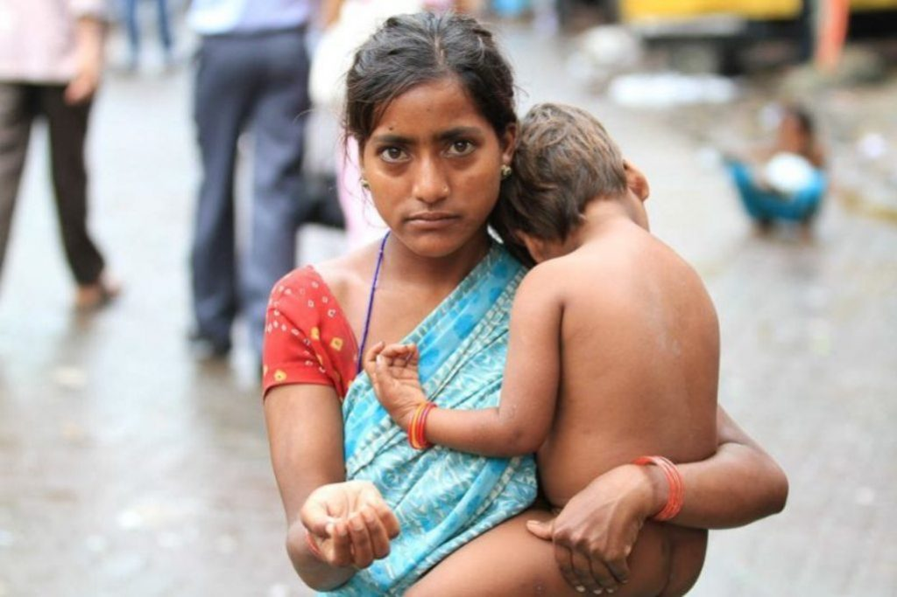
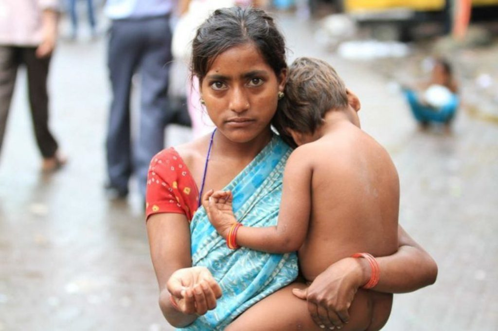

Premarital sex is sexual activity practiced by persons who are unmarried. The prevalence of pre-marital sex has increased in both developed and developing countries. In some cultures, the significance of premarital sex has traditionally been related to the concept of virginity. However, unlike virginity, premarital sex can refer to more than one occasion of sexual activity or more than one sex partner. There are cultural differences as to whether and in which circumstances premarital sex is socially acceptable or tolerated. Social attitudes to premarital sex have changed over time as has the prevalence of premarital sex in various societies. Social attitudes to premarital sex can include issues such as virginity, sexual morality, extramarital unplanned pregnancy, legitimacy besides other issues. Premarital sex may take place in a number of situations. For example, it may take place as casual sex, for example, with at least one participant seeking to experience sex; it may take place between a couple living together in a long-term relationship without marriage; for a betrothed couple engaging in sexual activity before their anticipated marriage; and many other situations are possible.

Filipino Engagement to Pre-marital Sex
Prevention of the Spicier Sex Lives of Millenials
Sexual intercourse is one of the most amazing experiences of life. It is a great tool that bonds couples. Powerful as sexual intimacy may be, though, it also has serious destructive capacity. The destructive impact of sexual intercourse is prominent in the realm of premarital sex. Casual daters may feel all right to have sex even on the first date. But for those who are looking for a meaningful relationship that is lasting, premarital sex is starting your relationship off on the wrong footing and faulty foundation.
Many dating partners have tried to grow their relationship on the wrong notion that sexual intercourse is love. Nothing can be further from the truth. Love is as far apart from sexual intercourse as love and hate is opposite of each other. You do not need love to get sex and you do not need sex to get love. Many gullible girls and sometimes boys have been cajoled, intimidated or deceived into believing that sexual intercourse is the same as love. Sexual intercourse and premarital sex is even called love-making. It may interest you to know that sexual intercourse is not even a sign of love.
 
